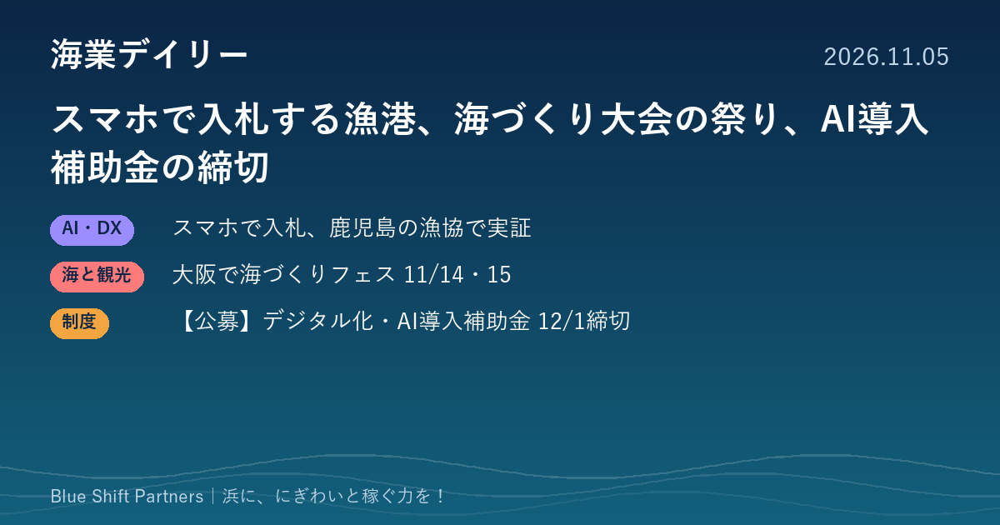

2026.11.05
スマホで入札する漁港、海づくり大会の祭り、AI導入補助金の締切

鹿児島の漁協支所で、離れた場所からスマートフォンで入札できる仕組みの実証が始まりました。大阪では全国豊かな海づくり大会に合わせて、誰でも無料で入れるフェスティバルが開かれます。直売所や食堂の予約・会計にも使えるデジタル化・AI導入補助金は、12月1日が次の締切です。
鹿児島県漁協高山支所で、スマホから入札できる電子入札の実証が始まる
株式会社ZIFISH（鹿児島市）は、鹿児島県漁業協同組合 高山支所（肝付町）で、電子入札システムの実証実験を10月19日に始めたと発表しました。仲買人約10社がスマートフォンやタブレットから漁獲物の重量・写真・品質情報を見て入札でき、同社の計量システムと連動して計量結果がそのまま入札情報になります。札集めや開札、集計などの手作業をなくし、現場に来られない買い手も参加できるようにするのがねらいで、作業時間や遠隔参加の状況、落札結果の変化を検証するとしています。
ここがポイント：買い手が増えれば浜値の底上げにつながり、職員の入札事務も軽くなります。仲買人の減少や人手不足に悩む小規模な市場ほど、検証結果に注目したい取り組みです。
出典：株式会社ZIFISH プレスリリース（PR TIMES）「現場に来なくても、魚が見えて、入札できる。ZIFISH電子入札システムの実証実験を開始」（2026-10-30）
全国豊かな海づくり大会に合わせ、大阪・岸和田と泉佐野で入場無料のフェスティバル（11/14・15）
第45回全国豊かな海づくり大会大阪府実行委員会は、関連行事「豊かな海づくりフェスティバル」を11月14日（土）・15日（日）の9時30分〜16時30分に開きます。会場は岸和田旧港地区緑地（アクアパーク）とりんくうアイスパーク（泉佐野市）の2か所で、入場無料・事前申込は不要です。大阪湾の生き物とのふれあいや体験型ワークショップ、「魚庭の海づくり丼」の販売、泉佐野会場では地元漁協のブースやマグロの解体ショーなどが予定されています。両会場とも駐車場はなく、公共交通機関での来場が案内されています。
ここがポイント：漁協のブース出展やふるまい、丼の販売は、都市部の来場者に浜の魚を知ってもらう「海業」の実践例です。自地域でイベントを企画する漁協・自治体にとって、出し物の組み立て方の参考になります。
出典：大阪府 報道発表「第45回全国豊かな海づくり大会関連行事『豊かな海づくりフェスティバル』の詳細が決定しました。」（2026-10-16）
【公募】デジタル化・AI導入補助金2026 通常枠、次の締切は12月1日
中小企業・小規模事業者等が業務用ソフトウェアやクラウドサービスを導入する費用を補助する「デジタル化・AI導入補助金2026」の通常枠は、7次締切が12月1日（火）17時です。対象はソフトウェア購入費とクラウド利用料（最大2年分）を必須とし、導入設定や研修、保守サポートなども含められます。補助率は1/2以内（最低賃金に関する要件を満たす場合は2/3以内）で、補助額は業務プロセス1つ以上で5万円以上150万円未満、4つ以上で150万円以上450万円以下です。申請の手続きは公式サイトの手続きフローで確認してください。
ここがポイント：直売所や食堂のPOSレジ・在庫管理、体験メニューの予約管理、会計ソフトなど、浜の事業者の事務を軽くする道具の導入に使えます。締切まで1か月を切っているので、検討中の事業者は早めの準備が必要です。
出典：デジタル化・AI導入補助金2026 公式サイト（中小企業基盤整備機構・中小企業庁）「通常枠」（2026-11-05）
電子入札もデジタル化・AI導入補助金も、目的は「人の手でやっている事務を減らし、そのぶん売ることに時間を回す」ことです。浜のイベントで魚を売るにも、予約・会計・在庫の仕組みが整っているかで手間が大きく変わります。まずは自分たちの事務のどこに時間がかかっているかを書き出すところから始めてみませんか。